Guía de laboratorio
En esta sesión de ejercicios vamos a describir los aspectos más importantes del uso del laboratorio para la realización de las prácticas del curso.
Cuentas de usuario
En el curso vas a tener que usar distintas cuentas de usuario en distintas aplicaciones. Intentamos aclarar todo en este apartado.
Usuario y contraseña del curso
En el curso tenemos recursos protegidos en los que hay que identificarse con un usario y una contraseña. Se trata del servidor de apuntes (http://www.jtech.ua.es/ayto2008/ y del servidor CVS.
En todos estos servicios tendrás el mismo usuario y contraseña, que se te proporcionará al comienzo del curso. Es posible cambiar la contraseña, pero hay que hacerlo en los distintos servicios. A continuación presentamos algunos detalles de cada servicio y explicamos cómo cambiar la contraseña en cada caso.
Apuntes
Los apuntes, trasparencias, plantillas para los ejercicios y demás material docente se encuentra en un sitio web restringido a los alumnos del curso. Puedes acceder a esta zona pinchando en el recuadro correspondiente (azul) en la web privada del curso (http://www.jtech.ua.es/ayto2008).
Podrás solicitar cambiar tu contraseña desde la página de login. Para ello, en lugar de introducir el login y password en dicha página, pulsaremos sobre el enlace para cambiar la contraseña. Nos pedirá nuestra dirección de correo electrónico con la que estamos registrados en el sitio web. Una vez introducida esta dirección, nos enviará un correo a esa cuenta. En el correo se incluye un enlace con un código especial que nos permitirá cambiar el password. Este enlace tiene una validez de 15 minutos. Pasado ese tiempo el código ya no valdrá. Pulsamos sobre el enlace y nos aparecerá un formulario donde cambiar la contraseña. Una vez la hayamos cambiado, podremos acceder al sitio web con ella.
Repositorios CVS
Se han creado en el servidor del curso (www.jtech.ua.es) un conjunto de cuentas de usuario en las que crearemos los repositorios CVS a los que subiremos el trabajo realizado durante el curso.
Para acceder a tu cuenta debes conectarte con ssh (utilizando alguna herramienta de Windows como Putty) y entrar utilizando tu nombre de usuario y contraseña.
Para cambiar tu contraseña debes entrar en la cuenta y ejecutar el comando passwd. Supongamos que tu usuario es iasimov:
ssh iasimov@www.jtech.ua.es iasimov@www.jtech.ua.es's password: CONTRASEÑA ANTIGUA www.jtech.ua.es$ passwd Changing password for user iasimov. Changing password for iasimov (current) UNIX password: CONTRASEÑA ANTIGUA New password: NUEVA CONTRASEÑA Retype new password: NUEVA CONTRASEÑA passwd: all authentication tokens updated successfully.
La nueva contraseña debe ser una buena contraseña UNIX: ser suficientemente larga y contener caracteres y números. Si olvidaras la contraseña puedes enviar un correo al administrador del repositorio (malozano@dccia.ua.es).
Cómo trabajar con espacios de trabajos de Eclipse
Eclipse es el entorno de programación que se va a usar en todas los módulos del curso. El trabajo en Eclipse se organiza en proyectos que se guardan en espacios de trabajo (Workspaces). Un espacio de trabajo se corresponde con un directorio físico del disco duro y los proyectos se corresponden con subdirectorios suyos. En el curso crearemos un espacio de trabajo por cada uno de los módulo.
Cuando arrancamos Eclipse por primera vez aparece un cuadro de diálogo en el que nos pide el espacio de trabajo en el que vamos a trabajar.
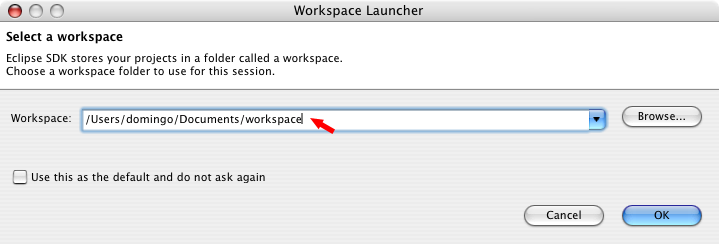
Por defecto, Eclipse sugiere el directorio C:\Documents and Settings\USUARIO\workspace. En el caso de los ordenadores de la EPS, el directorio es: C:\Documents and Settings\eps\workspace. Si aceptamos ese espacio de trabajo, Eclipse crea el directorio y comenzaremos a trabajar en él. También es podemos cambiar el nombre del espacio de trabajo y Eclipse creará el directorio correspondiente. Por último, también podemos explorar el sistema de ficheros y escoger un espacio de trabajo previamente creado.
Una vez que hemos trabajado con Eclipse, creando distintos proyectos dentro del espacio de trabajo actual, es posible que queramos guardar una copia de seguridad del espacio de trabajo actual, o pasárselo a algún compañero para que siga trabajando con él. Para ello no hay más que copiar el directorio espacio de trabajo.
Vamos a realizar un pequeño ejercicio para aprender a trabajar con espacios de trabajo de Eclipse.
Creación y copia de espacios de trabajo
En este pequeño ejercicio vamos a comprobar lo sencillo que es guardar un espacio de trabajo Eclipse en el disco USB. Seguiremos los siguientes pasos:
- Abrimos Eclipse y creamos un espacio de trabajo llamado presentacion.
- Creamos dos proyectos (jhd-sesion01-proyecto1 y jhd-sesion01-proyecto2) y algún fichero dentro de los proyectos.
- Movemos el espacio de trabajo a una ubicación diferente.
- Abrimos la nueva ubicación con Eclipse. Comprobamos que están todos los proyectos.
Vamos a continuación a realizar estos pasos de forma detallada. Para crear el espacio de trabajo llamado presentacion no hay más que arrancar Eclipse y que cambiar el nombre del espacio de trabajo sugerido:
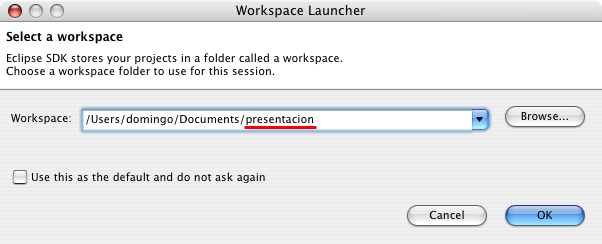
Una vez arrancado Eclipse en el espacio de trabajo definido, tendrá el siguiente aspecto:
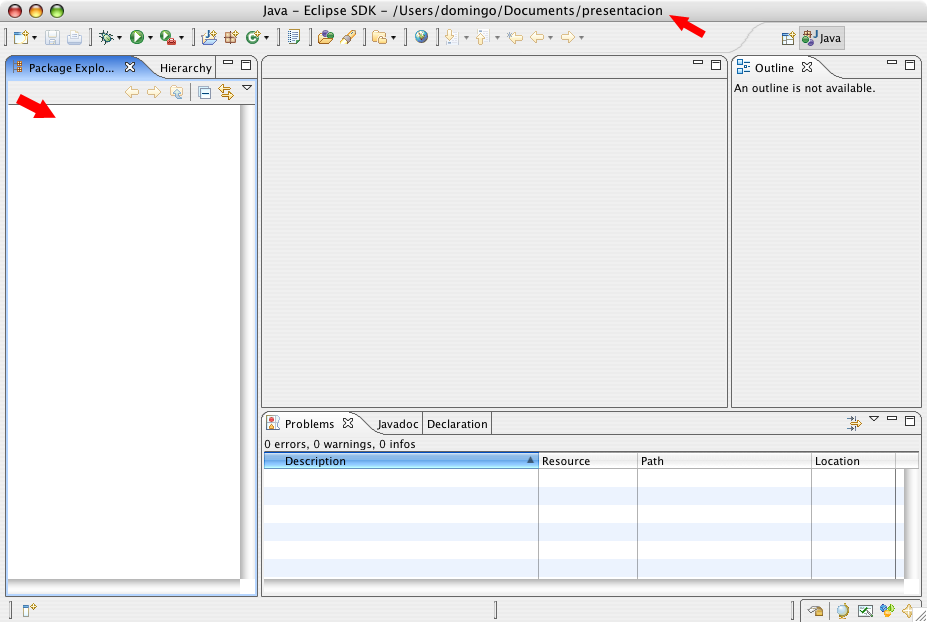
En el panel vertical izquierdo aparecerán los paquetes (todavía no hemos creado ninguno). En el nombre de la ventana aparece la localización del espacio de trabajo actual.
Para crear un proyecto podemos escoger la opción File>New>Project... o pulsar el botón derecho sobre el panel de proyectos y escoger la opción New>Project.... En cualquiera de estos casos, aparecerá un asistente que nos guiará para crera el tipo de proyecto que deseemos. En esta primera sesión vamos a escoger el proyecto de tipo General:
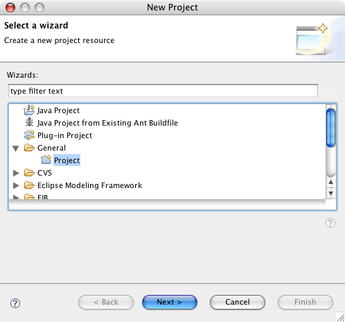
La siguiente pantalla del asistente nos pide el nombre del proyecto. Damos como nombre jhd-sesion01-proyecto1. Todos los nombres de proyecto vamos a escribirlos precedidos del nombre corto del módulo en que estemos haciendo los ejercicios.
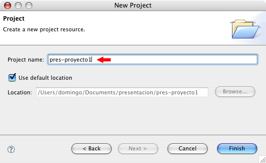
Cuando pulsamos Finish Eclipse crea el proyecto. Aparece como una carpeta en el panel de proyectos. En el disco duro se habrá creado el directorio corresondiente.
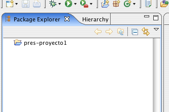
Creamos ahora otro proyecto llamado jhd-sesion01-proyecto2 de la misma forma que el proyecto anterior.
Para terminar con la creación de proyectos, creamos un fichero en uno de los proyectos usando la opción File>>New>File. Aparece el cuadro de diálogo siguiente, en el que se nos pide seleccionar el proyecto padre del fichero y su nombre. Lo llamamos prueba.txt
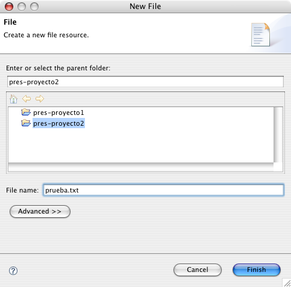
Tras introducir el nombre del fichero, Eclipse abre un editor en el panel central en el que podremos editar el contenido del fichero. Escribamos cualquier cosa.
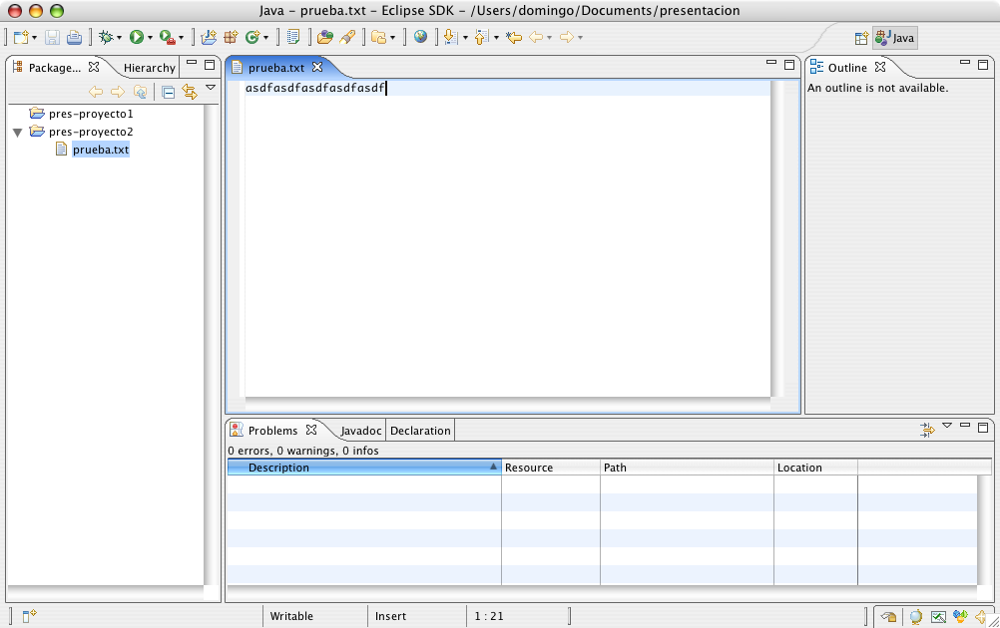
Grabamos el fichero y cerramos Eclipse.
Si ahora exploramos el disco duro vemos que la estructura de directorios creados es idéntica a la vista en Eclipse:
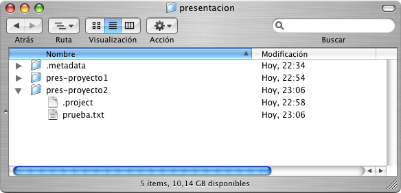
La carpeta presentacion contiene un directorio .metadata que guarda la configuración de Eclipse. A su vez, cada subdirectorio correspondiente a cada proyecto contiene un directorio .project en el que se guarda la configuración de Eclipse relacionada con el proyecto.
Para copiar un espacio de trabajo basta pues con copiar la carpeta que contiene el directorio .metadata. Puedes hacer y copiarlo en otra ubicación. Si abrimos Eclipse en esta nueva ubicación verás que el aspecto del espacio de trabajo es el mismo que antes.
Además de realizar esta copia de seguridad de tus ejercicios, también te vamos a pedir que publiques los proyectos en el repositorio CVS. Lo explicamos en el siguiente apartado.
Uso del repositorio CVS
La tecnología CVS permite mantener un repositorio remoto en el que se guardarán los distintos proyectos realizados en Eclipse. Mediante esta tecnología es posible realizar un control de versiones, de forma que cada vez que se sube un proyecto al repositorio sólo se guardan los cambios realizados con respecto a la versión ya existente. Es posible recuperar versiones anteriores del proyecto o incluso mantener varias ramas con versiones paralelas de un mismo proyecto.
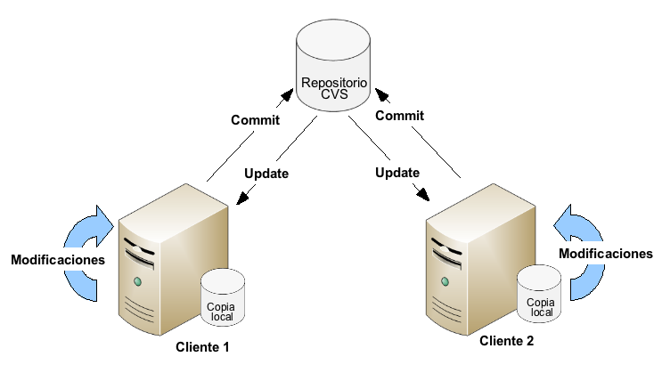
CVS es muy usado en los equipos de desarrollo software, ya que permite que sincronizar un único repositorio remoto (donde se encuentra el proyecto en el que se está trabajando) con múltiples clientes locales (desarrolladores), de forma que todos los clientes comparte el mismo proyecto, pueden subir sus cambios y mantenerse sus proyectos sincronizados.
El repositorio CVS del curso es accesible desde cualquier ordenador conectado a Internet. Cada alumno tiene disponible una cuenta de usuario en la que podrá crear un repositorio CVS para mantener de forma remota los proyectos en los que está trabajando.
Creación de un repositorio CVS
Vamos a ver como crear un repositorio en una máquina Linux en la que tengamos instalado cvs y el demonio de ssh.
Lo primero que haremos es conectarnos a www.jtech.ua.es mediante ssh y entrar en nuestra cuenta de usuario. Una vez dentro de nuestro directorio HOME, crearemos un subdirectorio cvs para nuestro repositorio:
mkdir cvs
Una vez creado el directorio, lo inicializaremos como repositorio con el comando:
cvs -d /home/mi_usuario/cvs init
Los datos para acceder a este repositorio CVS serán los siguientes:
- Dirección: www.jtech.ua.es
- Ruta del repositorio: /home/mi_usuario/cvs
- Modo de acceso: extssh
Aunque hayamos creado un repositorio individual para cada alumno, el uso común de CVS es el de gestionar las versiones de un proyecto en el que participe un grupo de desarrollo. Todos los integrantes del grupo subirán sus cambios a un único repositorio común. Por este motivo, el directorio del repositorio deberá tener permisos de lectura y escritura para todo este grupo de usuarios. Para ello podemos crear en Linux un grupo, al que por ejemplo podemos llamar j2ee, que integre a todos los miembros del equipo de desarrollo. Daremos permisos de grupo al directorio de nuestro el repositorio con:
chgrp j2ee /usr/local/cvs chmod g+ws /usr/local/cvs
Es posible también que por motivos de seguridad no nos interese que los miembros del grupo de desarrollo tengan cuentas de usuario en el servidor. Podríamos utilizar pserver para crear usuarios de CVS sin tener que crearles cuentas de Linux. En este caso utilizaríamos pserver para acceder al repositorio, en lugar de extssh.
Existen múltiples clientes para operar con CVS. Uno de los más interesantes está integrado en Eclipse. A continuación vamos a ver de forma detallada cómo operar con él.
Cómo subir un proyecto al repositorio CVS
Supongamos que queremos guardar uno de los proyectos desarrollados en esta sesión, por ejemplo el proyecto jhd-sesion01-proyecto2.
Para subir el proyecto al repositorio CVS hay que seleccionarlo, pulsar el botón derecho y escoger la opción Team>Share Project..:
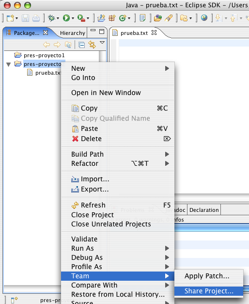
Aparecerá una ventana en la que hay que proporcionar los datos del repositorio CVS. Estos datos se grabarán en el directorio de trabajo de Eclipse y no tendrás que introducirlos de nuevo. Es recomendable no grabar tu contraseña de usuario si estás en un ordenador público.
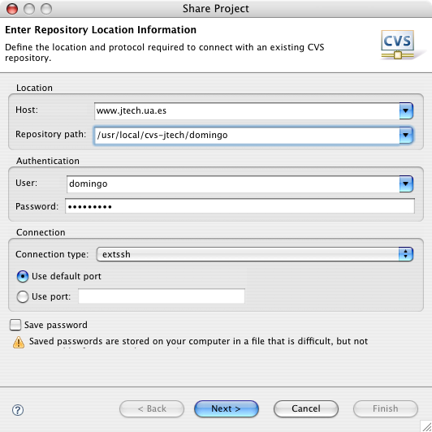
A continuación debemos indicar cuál será el nombre que en el repositorio CVS va a tener el proyecto que vamos a subir. Es lo que se denomina nombre del módulo CVS. Escogemos la opción por defecto de Eclipse (usar el nombre del proyecto como nombre del módulo CVS):
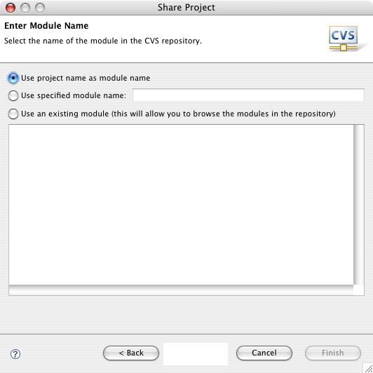
Pulsando el botón Next> aparecerá la siguiente pantalla en la que podrás revisar qué ficheros se van a guardar en el módulo recién creado. Aparecen con un signo + los ficheros que se van a añadir al módulo.
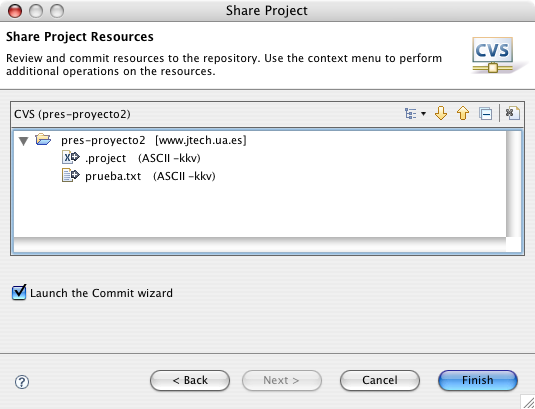
A continuación pulsamos Finish y aparecerá la pantalla con el comando commit. El comando commit es un comando CVS con el que se guardan los cambios en el repositorio, así como los comentarios sobre dichos cambios que consideremos oportunos. Es conveniente rellenar siempre los comentarios, porque serán útiles para examinar la historia de cambios.
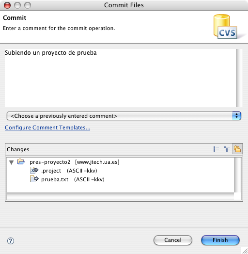
Una vez guardados los ficheros en el repositorio, el proyecto quedará enlazado al repositorio CVS. En el panel de proyectos de Eclipse aparece el servidor CVS asociado al proyecto y todos los ficheros y proyectos enlazados aparecen con un icono especial:
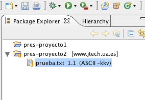
Cómo subir al repositorio cambios en el proyecto local
Una vez creado o descargado un repositorio en un proyecto haremos modificaciones en el proyecto local: modificaremos el contenido de algún fichero, crearemos nuevos ficheros y directorios o borraremos ficheros existentes. Eclipse marca todos aquellos recursos que se han modificado con un símbolo especial (">").
Por ejemplo, selecciona el fichero prueba.txt, modifica su texto y grábalo. Eclipse debe mostrar lo siguiente:
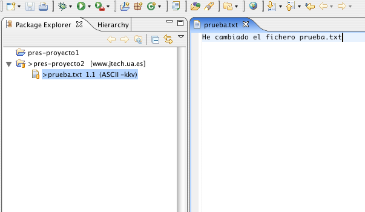
Nota que se han marcado los ficheros que se van a modificar en el repositorio. Para grabar (commit) los cambios en el repositorio, pincha el proyecto jhd-sesion01-proyecto2 y selecciona con el botón derecho del ratón la opción Team>Commit....:
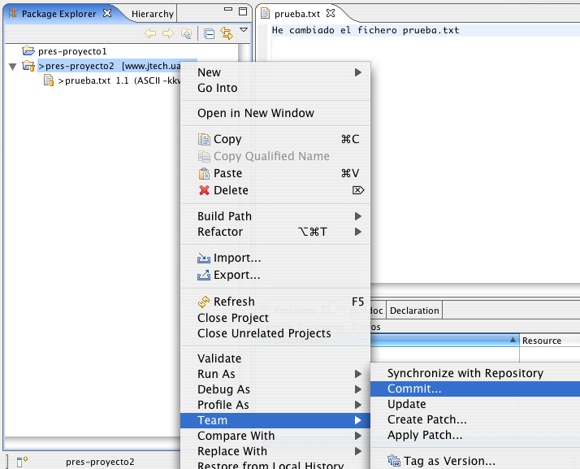
Al igual que cuando subes el proyecto por primera vez, aparecerá la ventana Commit en la que podrás escribir un comentario sobre los cambios que has realizado. Una vez que aceptas el commit, Eclipse se conecta con el repositorio y actualiza los cambios. Verás que desaparece el signo ">" que marcaba las diferencias con el repositorio.
Cómo explorar el repositorio
Para explorar el repositorio debes abrir la perspectiva (conjunto de paneles de Eclipse) CVS Repository Exploring. Para ello selecciona la opción Window>Open Perspective>CVS Repository Exploring. Eclipse mostrará el panel CVS Repositories con todos los repositorios CVS definidos (en este caso, sólo uno):
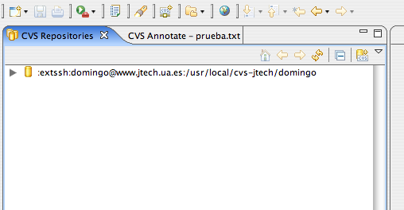
Podemos desplegar el repositorio y examinar su contenido. La rama HEAD corresponde a la rama principal. En otras sesiones veremos cómo crear ramas alternativas de un proyecto.
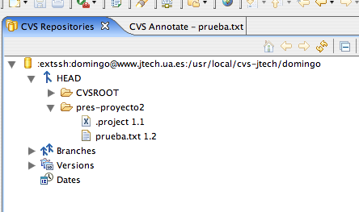
Pinchando en prueba.txt y pulsando el botón derecho podrás ver los comandos que puedes usar sobre un recurso del repositorio. El más común es Show History, que muestra las anotaciones de los sucesivos cambios que has ido guardando:
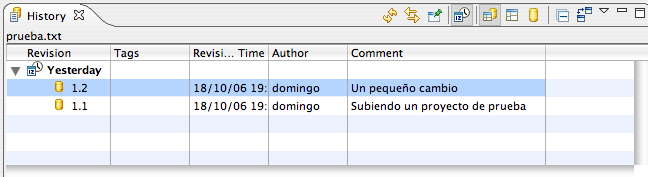
Para volver a la perspectiva anterior, debes seleccionar la perspectiva Resource en la parte superior derecha de la ventana principal de Eclipse:
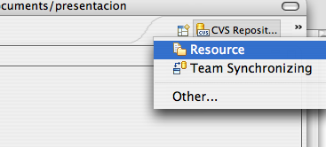
Cómo descargar un proyecto del repositorio
Por último, vamos a ver cómo descargar un proyecto del repositorio CVS a un espacio de trabajo nuevo. Para ello, creamos un espacio de trabajo nuevo con la opción de Eclipse File>Switch Workspace.... Escribimos un nuevo nombre de espacio de trabajo para crearlo (por ejemplo, presentacion2).
Una vez abierto el nuevo espacio de trabajo abrimos el asistente de creación de proyectos y seleccionamos la opción CVS>Projects from CVS:
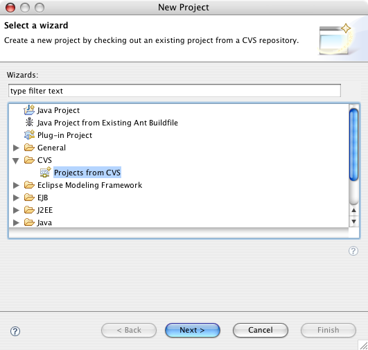
Seleccionamos la localización del repositorio que nos proponen por defecto y seleccionamos el proyecto que queremos descargar:
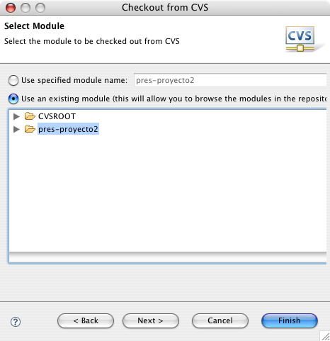
Versiones y ramas
Hemos visto los fundamentos básicos de trabajo con CVS. Cada día, cuando comenzamos a trabajar en nuestro proyecto hacemos update para actualizar en nuestra copia local los cambios que otros puedan haber hecho en el repositorio, y una vez hayamos terminado nuestro trabajo haremos commit para subir nuestros cambios al servidor.
Con esto un integrante de un grupo de trabajo podrá participar en un desarrollo común teniendo siempre en su máquina los últimos cambios que hayan realizado el resto de componentes del grupo. Pero la utilidad de CVS no sólo se limita a esto, sino que también nos va a permitir mantener diferentes versiones de nuestro sistema.
Una versión en CVS es una instantánea que se toma del sistema en un momento dado. Normalmente crearemos una versión por cada release que hagamos de la aplicación. Para hacer esto en Eclipse tenemos la opción Tag As Version. Al crear una versión deberemos darle una etiqueta para identificarla. Posteriormente podremos descargar esta versión y así recuperar el sistema tal como era en ese momento.
Es importante remarcar que una versión no es modificable, es sólo, como hemos dicho, una fotografía del sistema en un momento dado. Si se permitiese modificarla se perdería su utilidad principal, que es la de en cualquier momento poder recuperar una configuración previa de nuestro sistema tal como era en el momento que se guardó.
Ahora imaginemos que hemos lanzado una versión 1.00 y la hemos puesto en producción. A continuación nos ponemos a trabajar en una serie de grandes cambios de cara a sacar una versión 2.00. Algo prácticamente inevitable es que durante ese tiempo aparezca algún bug en la versión 1.00 que actualmente esta siendo utilizada, y deberíamos ser capaces de sacar un parche para esta versión lo más rápidamente posible. Sin embargo, si estamos metidos en una serie de grandes cambios para la versión 2.00 podremos tardar bastante en dejar listo este sistema para ser puesto en producción.
La solución a este problema nos la proporcionan las ramas. Con CVS podemos crear varias ramas de desarrollo dentro de un mismo proyecto. Por defecto estamos en una rama llamada HEAD, en la que tenemos el desarrollo principal. Sin embargo, en cualquier momento del desarrollo podremos crear una rama de desarrollo independiente (con Branch en Eclipse) en la que podamos hacer cambios sin afectar al resto de ramas.
En nuestro caso crearemos una nueva rama a partir de la versión 1.0. De esta forma tendremos dos ramas: la rama HEAD del desarrollo principal, en la que realizaremos los cambios para la versión 2.0, y una rama de mantenimiento para la versión 1.0. En esta segunda rama tendremos el sistema tal como era en el momento de hacer la release de la versión 1.0, por lo que con ella podremos de forma rápida solucionar los bugs aparecidos en la versión 1.0 y sacar así la versión 1.01 y sucesivas correcciones, mientras en paralelo se trabaja con los cambios para la versión 2.0.
Una vez terminada la versión 2.0, será deseable poder añadir a esta versión de forma automática todas las correcciones que hayamos ido haciendo a la versión 1.0 en su rama de mantenimiento, sin tener que volver a solucionar todos estos fallos a mano. Para ello tenemos la opción de fusionar ramas (Merge). Podemos fusionar los cambios de la rama de mantenimiento dentro de la rama HEAD, y así se realizarán en esta última rama todas las correcciones que hicimos en la anterior.